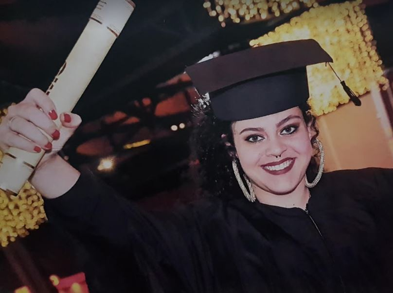

Trajetória acadêmica e profissional
Eu sempre gostei muito de estudar. Lembro da minha mãe falar com orgulho sobre o professor
de história, o
Belini, quando disse para ela que se ele tivesse condições financeiras iria me matricular em uma escola
privada. Infelizmente, teve um momento da minha vida que precisei me dedicar mais ao trabalho do que aos
estudos, motivo pelo qual não prestei vestibular ao concluir o ensino médio. Comecei como jovem aprendiz
e fui promovida a assistente administrativa quando completei 18 anos. Aos 19 anos tive uma breve
experiência como recepcionista, foi quando me despertou a necessidade de me dedicar novamente aos
estudos.
Assim, em 2014 Iniciei minha graduação em Serviço Social e me formei em 2018 com boas médias de notas.
Nesse processo estagiei dois anos completos na Ouvidoria da Câmara Municipal de São Paulo. Descobri uma
gestação e decidi me dedicar exclusivamente durante os anos iniciais da primeira infância do meu filho,
fiz diversos cursos na pandemia (eu sinto prazer em estudar e obter novos aprendizados, sou bastante
curiosa). Quando retornei ao mercado de trabalho decidi realizar a transição de carreira.
Relação com a tecnologia
Por volta dos 10 anos de idade eu tive meu primeiro computador. Monitor tubo, aquele branco meio
amarelado, a CPU parecia um avião por conta do barulho. Eu adorava jogar Paciência e desenhar no Paint.
Internet era discada então somente após a meia-noite. Comecei a fazer cursos de informática, lembro
vagamente de ter contato com HTML também. Eu adorava mas não conseguia finalizar os cursos por razões
financeiras. Então a vida me levou para outros caminhos, mas meu contato com a tecnologia sempre esteve
presente, como usuária. Durante a pandemia da Covid-19 o contato com a tecnologia foi intensificado,
novos softwares foram popularizados e minha curiosidade só aumentou. Porém, eu ainda estava focada na
maternidade e os cursos que eu realizava envolviam o Serviço Social. Foi no início de 2022 que eu
iniciei os estudos em desenvolvimento e desde então um novo mundo se abriu para mim, com muitas
possibilidades e onde eu me encontrei, consigo resgatar aquela paixão de infância, junto com a
curiosidade e a necessidade de estudar constantemente.
Confesso que uma das razões que fizeram eu me aproximar da tecnologia, agora como
profissional e não somente usuária, foram as notícias. Eu fiquei surpresa quando comecei a ver que o
mercado tech possuia muitas vagas disponíveis porque não haviam pessoas capacitadas o suficiente para
assumirem os cargos. Em um contexto de altas taxas de desemprego e inflação, a curiosidade me levou a
pesquisar mais sobre a área e eu admito que tinha uma visão extremamente preconceituosa sobre
programação. Nunca me atraiu trabalhar na área porque eu achava que era um trabalho solitário e
individual. Monótono. E eu sempre fui uma pessoa que busca o movimento. Porém, ao me aprofundar eu me
deparei com um cenário totalmente diferente. O trabalho em equipe é fundamental nessa área, a
comunicação, o senso de coletividade. Dessa forma, eu decidi que quero ser uma excelente profissional da
área e me inscrevi, no começo de 2022, no bootcamp da Generation. Estava trabalhando na minha
área de formação, como Assistente Social em um escritório de arquitetura, quando recebi a notícia de que
havia passado no processo. Cerca de 1000 pessoas participaram do processo seletivo e eu fui uma das
escolhidas para compor o time de 40 pessoas da Turma 53. Decidida a seguir na tecnologia, me desliguei do
emprego como Assistente Social para focar no curso de 3 meses, com jornada diária das 08h as 17h, simulando
o ambiente profissional e absorvendo aprendizados tanto de habilidades técnicas, já que desenvolvemos duas
API's utilizando basicamente Java, SpringBoot, HTML, CSS, JavaScript, Angular, MySQL, sistema de controle de
versão GitHub e metodologias ágeis. Assim como habilidades comportamentais, desenvolvendo e aprimorando
a comunicação, o trabalho em equipe, persistência e orientação ao detalhe.
Me sinto pronta e apta para começar a trabalhar.